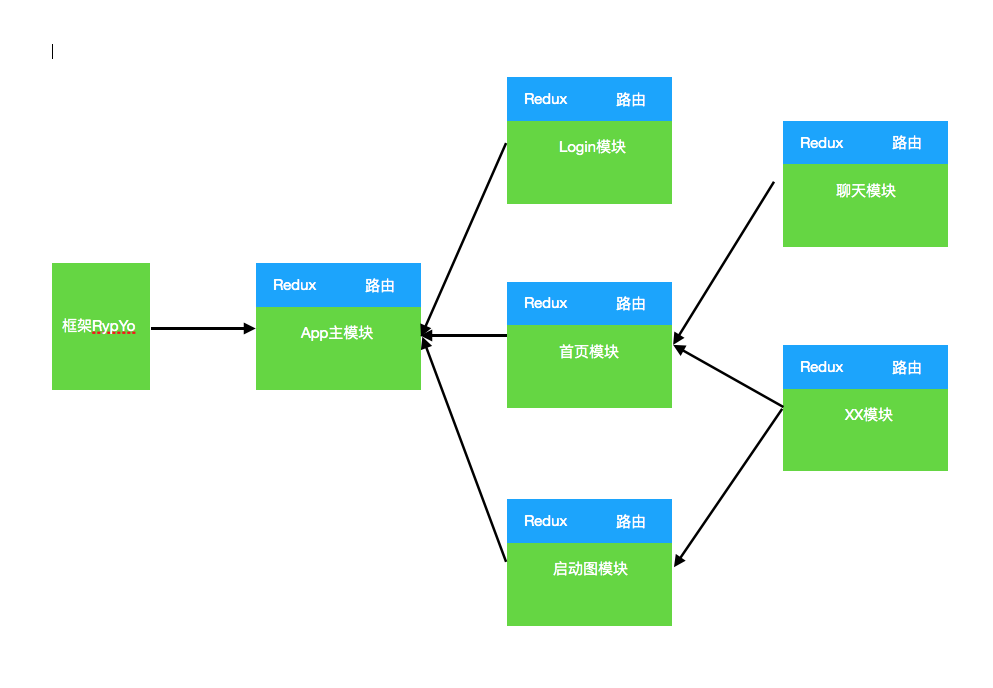

RypYo
-
思路设计
-
框架启动
暂时仅仅依赖 AppRegistry.registerComponent('com.ryp.rn.core', AppModule); 框架启动 加载主模块AppModule-
设计 和 想法
1:框架启动 2:初始化 和 加载必要资源 全局系统配置 3:通过注入的方式 依赖模块 1:调试模块 2:网络模块 ....
-
-
模块加载
- 模块的创建
- 数据： (Redux | theme) 接受上级模块组件数据,并向下注入。
- 路由： 组装路由数据,接受子组件路由
- UI：加载显示UI
> 项目可按照需要分为多个模块 > 模块之间保持相互独立（数据独立 功能独立） > 各个模块可进行依赖，组装为大的模块
-
-
结构图 
-
模块组成
-
模块配置
模块的创建 和 配置 @NgModule({ key: "AppMain", reduxStore: getReduxStore(), theme: {}, bootstrap: appMain, imports: [], navRouter: APPRouter }) export class AppModule extends ModuleBase { ConfigStart() { } RouterHandleAfter(config, Container) { } }说明 是否必须 该模块的标识 no duxStore 模块的Redux数据 eme 主题数据 otstrap 该模块的入口 ports 该模块下的所有子模块 vRouter 该模块的路由参数 -
路由
export class ModuleRouter { name = "" type = null routeConfigMap = {} stackConfig = {} acceptRouter = false getRouterInstance() { } } exam: export const APPRouter = new ModuleRouter({ type: createSwitchNavigator, name: "RYPApp", routeConfigMap: { AppLoad: {screen:BlankPage} }, stackConfig: { initialRouteName: "AppLoad" }, acceptRouter: true }) 内部 Router = createSwitchNavigator(routeConfigMap,stackConfig)说明 是否必须 pe 依赖react-navigation 创建路由 me 该名称是作为路由在父模块的名称 uteConfigMap 依赖 react-navigation 该模块路由配置 (接受下级模块的入口配置) ackConfig 依赖 react-navigation 该模块路由配置 ceptRouter 控制是否接受下级入口路由 tRouterInstance 得到配置后的路由对象 -
模块和路由关系
模块和路由是一一对应关系
模块入口是模块的首屏 ,也是路由具体配置的地方
子模块展示 需要父模块注册子模块路由（导航进入）
父模块接受所有依赖的子模块 并完成入口注册
-
对应关系
-
父子模块
子模块 export const LoginRouter = new ModuleRouter({ type: createStackNavigator, name:"RYPLogin", routeConfigMap: { Login: { screen: Login } }, stackConfig: { initialRouteName: 'Login', headerMode: 'screen', navigationOptions: { header: null } } }) export class LoginBoot extends Component{ render(){ ARouter = LoginRouter.getRouterInstance() return ( <View> <ARouter /> //导航器的入口 </View> ) } } @NgModule({ import:[], bootstrap: LoginBoot, navRouter: LoginRouter }) export class LoginModule {} 主模块 模块入口 export class APPComponent extends Component{ render(){ ARouter = AppRouter.getRouterInstance() return ( <View> <ARouter /> //导航器的入口 </View> ) } } 模块路由 export const AppRouter = new ModuleRouter({ type: createSwitchNavigator, name: "RYPApp", routeConfigMap: { AppLoad: {screen:BlankPage} }, stackConfig: { initialRouteName: "AppLoad" }, acceptRouter: true }) 模块配置 @NgModule({ import:[ LoginModule, HomeModule ], bootstrap:APPComponent, navRouter:AppRouter }) export class AppModule {} AppRegistry.registerComponent('com.ryp.rn.core', AppModule); App 启动并显示 APPComponent 组件 作为App首屏 并显示AppRouter路由的initPage -
模块和路由（代码如上）
-
路由依赖
在子父模块初始化之后 父模块路由配置会有所改变 AppRouter routeConfigMap = { AppLoad: {screen:BlankPage}, +会添加子模块入口配置 RYPLogin :{screen: LoginBoot} RYPHome :{screen: HomeBoot} .... } 创建父模块路由 并拥有所有子模块入口
-
-
-
-
依赖的第三方库
- react-redux
- react-navigation